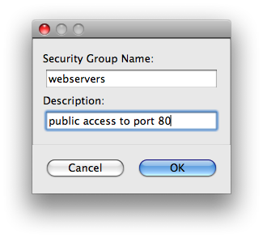
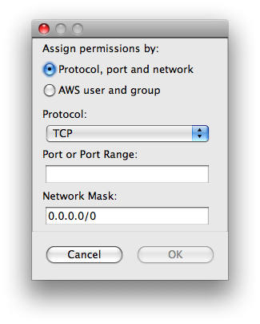

EC2 security groups are an important tool for controlling the security of your EC2 instances. You can use the EC2 Security Groups view to manage your security groups, including creating and deleting groups as well as managing the permissions granted to those groups.
Right-click the security groups list in the security group view and select "New Group" from the context menu. You'll need to give your security group a name (ex: webservers) and a meaningful description (ex: open access for HTTP traffic).

Once you've created your new security group, you can assign permissions to control the types of traffic allowed into any EC2 instances in that security group. Right-click the permissions table in the EC2 Security Groups view after you've selected your new security group and select "Add Permissions" from the context menu.

There are a few different ways to assign permissions to a security group. For more details on all the options you can check out the developer guide for EC2. For now, try simply opening a port or port range. If you want to allow SSH connections so that you can log into your remote host, select port 22 with the TCP protocol.
The network mask option allows you to lock down what IPs are allowed to access the port and protocol you specified. If you want to leave the permissions wide open for anyone on the internet to access a port on your instance (ex: port 80 for HTTP traffic on a webserver) then you'd want a netmask of 0.0.0.0/0. You typically won't want to leave more sensitive ports, such as SSH on port 22, wide open. For these ports you can use http://checkip.amazonaws.com/block to find out the most restrictive netmask you can use to allow only your current Internet connection to access a port on your EC2 instance.